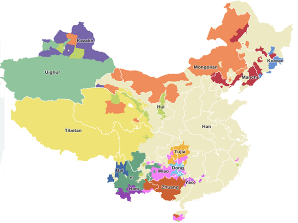
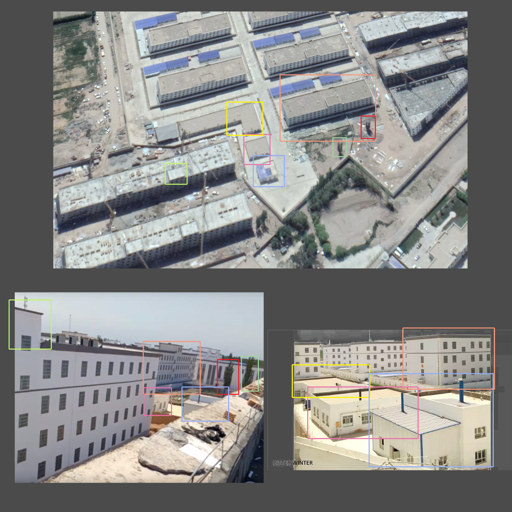
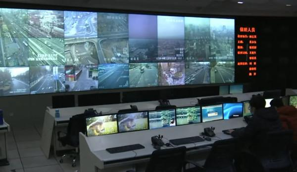

Chiisai Nakamoto
Chiisai Nakamoto 
For several years, journalists and researchers had suspected the installation of “re-education” camps for Uyghur minorities in China.
A fairly comprehensive report published in November 2018 by the Australian Strategic Policy Institute (ASPI) gathered evidence, especially from satellite images of the existence of these camps.
The Uyghur population in China
Uyghurs are a Turkish-speaking and Sunni Muslim people living in the Xinjiang Autonomous Region.

They are 11 million of the 14 million Muslims in the region. It is estimated that at least 800,000 of them are locked up in camps. The repression against the Uyghurs has especially increased since the deadly riots of 2009.
China, which initially denied this political and police repression, ended up admitting the existence of these camps “to educate” the Uyghur population.
Xinjiang Internment Camps
These are camps located in the Chinese province of Xinjiang, built from 2014 with the aim of interning hundreds of thousands of practicing Uyghur and Kazakh Muslims. One million Uyghurs are believed to be interned there preventively and without trial as part of a vast anti-terrorism campaign targeting Islamists and separatists after numerous attacks in 2013 and 2014.
China denies the existence of these camps before officially recognizing their existence in October 2018 under the name of “re-education camps”. She describes them as vocational training centers, with the aim of combating Muslim terrorism and extremism.
Abroad, several countries and NGOs qualify these camps as concentration camps and stress the conditions of detention which violate human rights.
Here is a map, which brings together many re-education camps, visible through a satellite view.
Xinjiang re-education camps list by cities :
- Urumqi City :
- Tianshan District 天山区
- Saybag District 沙依巴克区
- Xinshi District 新市区
- Shuimogou District 水磨沟区
- Toutunhe District 头屯河区
- Dabancheng District 达坂城区 (43.383833, 88.288389)
- Midong District 米东区
- Ürümqi County 乌鲁木齐县
- Karamay City :
- Dushanzi District 独山子区 (44.331648, 84.821874)
- Karamay District 克拉玛依区 (45.533700, 84.796670)
- Baijiantan District 白碱滩区 (45.698504, 85.156210)
- Orku District 乌尔禾区
- Turpan City :
- Gaochang District 高昌区 (42.960889, 89.217167; 42.946017, 89.231182; 42.950152, 89.240127; 42.953682, 89.238152)
- Shanshan County 鄯善县 (42.880909, 90.132269)
- Toksun County 托克逊县
- Hami City :
- Yizhou District 伊州区 (42.811472, 93.433611)
- Barkol County 巴里坤县
- Yiwu County 伊吾县
- Changji Prefecture :
- Changji city 昌吉市 (44.101911, 86.996106)
- Fukang city 阜康市 (44.196194, 87.874286)
- Hutubi County 呼图壁县 (44.206923, 86.893920)
- Manas County 玛纳斯县 (44.329306, 86.160519)
- Qitai County 奇台县
- Jimsar County 吉木萨尔县
- Mori County 木垒县
- Bortala Prefecture :
- Bole city 博乐市
- Alashankoucity 阿拉山口市
- Jinghe County 精河县
- Wenquan County 温泉县
- Bayingolin Prefecture :
- Korla city 库尔勒市 (41.705044, 86.283372)
- Luntai County 轮台县
- Yuli County 尉犁县 (41.373725, 86.318747)
- Ruoqiang County 若羌县
- Qiemo County 且末县 (38.104943, 85.574115)
- Yanqi County 焉耆县
- Hejing County 和静县 (42.311591, 86.310317)
- Hoxud County 和硕县
- Bohu County 博湖县
- Aksu Prefecture :
- Aksu city 阿克苏市 (41.117222, 80.161750; 41.124182, 80.172647)
- Wensu County 温宿县 (41.344615, 80.241489;
41.266701, 80.247408) - Kuqa County 库车县 (41.731278, 83.008611; 41.753920, 83.019399)
- Xayar County 沙雅县 (41.192463, 82.739321; 41.233676, 82.835233)
- Xinhe County 新和县
- Baicheng County 拜城县
- Wushi County 乌什县
- Awat County 阿瓦提县
- Kalpin County 柯坪县
- Kizilsu Prefecture :
- Artux city 阿图什市 (39.642389, 75.994694, 39.639799, 75.995126; 39.669080, 76.091044)
- Akto County 阿克陶县 (39.147917, 75.952222, 39.260278, 76.001764)
- Akqi County 阿合奇县
- Wuqia County 乌恰县
- Kashgar Prefecture :
- Kashgar city 喀什市 (39.431667, 76.055750 ,
39.457111, 76.041944,39.456833, 75.975333,39.469306, 75.969472, 39.451806, 76.110250) - Shufu County 疏附县 (39.359194, 75.863889; 39.33253536,75.68783723)
- Shule County 疏勒县 (39.358111, 76.051139;
39.382061, 76.072503; 39.380806, 76.078222 ; 39.410674, 76.132959; 39.407461, 76.094108;) - Yengisar County 英吉沙县 (38.937523, 76.058796; 38.960800, 76.156387)
- Zepu County 泽普县 (38.086181, 77.112836)
- Shache County 莎车县 (38.351695, 77.305740; 38.317354, 77.210579; 38.362843, 77.225699; 38.411947, 77.144442; 38.362651, 77.120962; 38.365028, 77.119861; 38.460150, 77.467439; 38.678054, 77.304839; 38.236269, 77.096636)
- Yecheng County 叶城县 (37.916778, 77.351472; 37.851194, 77.437028)
- Makit County 麦盖提县 (38.837583, 77.707472; 38.880546, 77.656862)
- Yopurga County 岳普湖县
- Jiashi County 伽师县 (39.538611, 76.713917; 39.438250, 76.740472; 39.488704, 76.706074)
- Bachu County 巴楚县 (
39.825278, 78.550111; 39.818870, 78.518519; 39.812540, 78.556033) - Taxkorgan County 塔什库尔干县
- Kashgar city 喀什市 (39.431667, 76.055750 ,
- Hotan Prefecture :
- Hotan city 和田市 (37.111806, 79.970833*; 37.163833, 79.866917; 37.130112, 79.971045)
- Hotan County 和田县 (37.249778, 79.848056; 37.235631, 79.836379; 37.239629, 79.850156;)
- Moyu County 墨玉县 (37.111861, 79.641917; 37.252194, 79.721889; 37.227560, 79.734815; 37.259190, 79.747715)
- Pishan County 皮山县
- Lop County 洛浦县 (37.101962, 80.179048)
- Qira County 策勒县 (36.982383, 80.813753; 36.964510, 80.813332)
- Yutian County 于田县 (36.800339, 81.832909; 36.835777, 81.755686)
- Minfeng County 民丰县
- Ili Prefecture :
- Yining city 伊宁市 (43.977428, 81.138830; 43.870143, 81.383824)
- Kuytun city 奎屯市 (44.412373, 85.070769)
- Korgas city 霍尔果斯市
- Yining County 伊宁县 (43.974431, 81.496156; 44.000237, 81.533377; 43.980717, 81.535563)
- Qapqal County 察布查尔县 (43.839905, 81.164962)
- Huocheng County 霍城县 (44.025250, 80.874083; 44.058975, 80.849792)
- Gongliu County 巩留县 (43.517357, 82.209137)
- Xinyuan County 新源县
- Zhaosu County 昭苏县 (43.149514, 81.109320; 43.182521, 81.135026)
- Tekes County 特克斯县
- Nilka County 尼勒克县 (43.798260, 82.487920)
- Tacheng Prefecture :
- Tacheng city 塔城市 (46.717771, 82.955078)
- Usu city 乌苏市 (44.421126, 84.670065)
- Emin County 额敏县
- Shawan County 沙湾县 (44.346051, 85.629137)
- Toli County 托里县
- Yumin County 裕民县
- Hoboksar County 和布克赛尔县
- Altay prefecture :
- Altay city 阿勒泰市
- Burqin County 布尔津县
- Fuyun County 富蕴县
- Fuhai County 福海县
- Habahe County 哈巴河县
- Qinghe County 青河县
- Jeminay County 吉木乃县
- Xinjiang Production and Construction Corps :
- Shihezi city 石河子市
- Aral city 阿拉尔市
- Tumxuk city 图木舒克市
- Wujiaqu city 五家渠市
- Beitun city 北屯市
- Tiemenguancity 铁门关市
- Shuanghe city 双河市
- Kokdala city 可克达拉市
- Kunyu city 昆玉市
As we can see from the evolution of this camp, over the 2.5-year period covered by a report from January 18, 2016 to September 2018, the facility increased from 5 to 24 buildings or wings. Its total floor area increased during this period, from 12,200 m² to 129,600 m². This represents a size increase of 1062.3%.
Coordinates: 39°21’27.64”N, 76°3’2.39”E

Through satellite and imagery analysis, the physical features of the camp - including barricaded facilities, watchtowers and enclosures surrounded by barbed wire - can be clearly seen. This also makes it possible to prove that it is indeed a camp to lock up Muslims.
 Images of “Bitter Winter” from the Chengnan Training Center. The photo features described above correspond to contours of the same color in the satellite imagery.
The ASPI report covers 28 camps, which represents only a sample of re-education camps in Xinjiang estimated at more than a 100th, or even 1200 if the provisional camps are taken into account. The study shows that the size of these camps increased sharply between 2016 and 2018.
Which leads us to wonder if the situation has only worsened, from the start, to what could be described as genocide.
Mass espionage of the Uyghur population
A Lookout Threat Intelligence report found that China was using malware to track the Uyghur people. This surveillance activity was observed as early as 2013. Four Android tools are used in this hacking campaign: SilkBean, CarbonSteal, DoubleAgent and GoldenEagle.

Once infected apps are downloaded to a device, hackers have a real-time view of every activity on the phone.
In some situations, hackers only need to send an invisible text message to the user to get data on that specific phone. The malware would simply send the data via SMS and quickly erase all traces of those messages.
This way, the user never notices that their data is stolen. And in order to avoid further suspicion, hackers are also able to kill their spyware, especially in situations where the application appears to be consuming too much battery.
Forced sterilization of Uighurs
Uyghur women are systematically forcibly sterilized, an Associated Press investigation revealed on Monday June 29th.
When they are pregnant, they have no choice but to have an abortion. Adopted with the aim of eradicating the Uyghur people, these actions led to a drop in their birth rate by 24% during the year 2019. These sterilizations and abortions are carried out at the entrance to the concentration camps.
Women are also separated from their children and very often the latter disappear.
Some women say they were forced to be sterilized under threat of being sent to camps. Others would have been forced to implant an IUD.